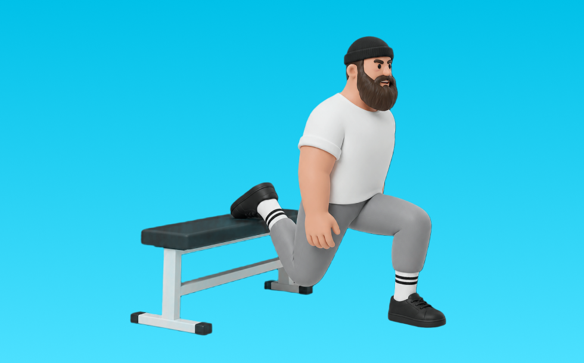

ブルガリアンスクワット

ブルガリアンスクワットとは、自重を使って「片脚でしゃがんで立つ」動作でお尻（臀筋）、脚（大腿四頭筋）を鍛える種目です。後ろ足を台に乗せ、上体を保ってしゃがみ、前脚で床を押して立ち上がる動作を繰り返します。下半身の筋力・筋量アップが期待できます。
- 対象部位
- 脚
- 器具
- 自重
- 記録形式
- 回数
- 別名
- ブルガリアンスプリットスクワット / ブルガリアン
YouTube動画
-
ブルガリアンスクワットの効果的なやり方
-
【神尻と神脚】尻とハムストリングに効かせるフォームを教えます 【新・バズーカ岡田チャンネル】 #バズーカ岡田
-
【ブルガリアンスクワット】自宅でもできる！前ももが張らないブルガリアンスクワット解説
-
痩せやすい体へ、負荷の高い片足自重トレーニング！ブルガリアンスクワットの正しいやり方
-
【超重要】ブルガリアンスクワットの正しい足の位置の決め方
-
【大臀筋・ハムの筋肥大に必須!!】ブルガリアンスクワットの適切なフォームと危険なやり方
-
【ブルガリアンスクワット徹底解説】境目くっきりのお尻を作る🍑
-
【ブルガリアンスクワット】初心者でも正しくお尻を鍛えられる方法
-
ブルガリアンスクワットの正しいやり方。痩せやすい体へ、負荷の高い片足自重トレーニング！【左右 各10回×3セット】
-
ブルガリアンスクワットが上手くなる7つのポイント お尻・大殿筋に効かせるコツ グラグラを直す！ランジ
-
おしりのトレーニング｜ブルガリアンスクワット3種目【4分間】
-
【脚トレの常識】ブルガリアンスクワットをやらないのはもったいない！【筋トレ】
-
ブルガリアンスクワットのフォーム｜お尻に効かせるやり方【研究で解説】下半身筋トレを見直す
-
ブルガリアンスクワットの新常識！最大ストレッチで大臀筋がバチバチ！【最強の尻トレ③/新・バズーカ岡田チャンネル】 #バズーカ岡田
YouTubeショート
-
正しいブルガリアンスクワット4つのポイント #筋トレ
-
【ブルガリアンスクワット】3つのポイント #パーソナルトレーナー #筋トレ #脚トレ #下半身トレーニング #ブルガリアンスクワット
-
【筋トレ女子】正しいブルガリアンスクワットのやり方
-
ブルガリアンスクワット！お尻に効かせる方法と前ももに効かせる方法🫶🏽
-
【ブルガリアンスクワット】怪我なくお尻を鍛える正しいフォーム解説
-
【ブルガリアンスクワット】フォームのミスあるある。狙いたい部位を意識して、正しいフォームでやってみましょう！💪#GronG #グロング #筋トレ #フィットネス #脚トレ #ブルガリアンスクワット
-
今すぐ辞めて⚠️脚が太くなるブルガリアンスクワット
-
ブルガリアンスクワットの正しい脚の位置
-
やめた方がいいブルガリアンスクワット #筋トレ
-
脚狙い・臀部狙いで変わる！ブルガリアンスクワットのセットアップ【筋トレ】
-
ブルガリアンスクワットの正しい足の決め方 #筋トレあるある #脚痩せ #ブルガリアンスクワット
-
【見てすぐ出来る】ブルガリアンスクワットの正しいフォーム解説 #shorts
-
持田選手とぶーちゃんにブルガリアンスクワットについてレクチャーしていてもらいました！次はどの種目の解説をやってほしいかコメントしてね！#筋トレ #volix #尻トレ #ちょこっと惜しい
-
ブルガリアンスクワットほんまにキツすぎるけど頑張っています #筋トレ #脚トレ #ブルガリアンスクワット #shorts
-
1分でわかる！ブルガリアンスクワット解説 #筋トレ女子
-
【SGIR】ブルガリアンスクワットはやるべき！
-
ブルガリアンスクワットの足の位置の決め方 #shorts
-
【お尻トレ】ブルガリアンスクワットのやり方
-
【お尻】【ブルガリアンスクワット】お尻に効かない3つの間違い #パーソナルトレーナー #筋トレ #尻トレ #下半身痩せ
-
ブルガリアンスクワット
-
スクワットの正しいやり方【筋トレ】
-
ブルガリアンスクワットをさらに地獄にする方法【世界の筋肉】
-
スクワットの正しいやり方#shorts
-
脚の日に欠かせないブルガリアンスクワットのポイント🫶🏽
-
脚を細くするスクワットはこれ！お尻ともも裏鍛えれば、前ももがスッキリするよ
-
ブルガリアンスクワットでお尻を鍛えるコツ #shorts
動作方法
- 足幅を決め、体幹を固める
- 股関節と膝を同時に曲げて下ろす
- 足裏全体で床を押して立ち上がる
動作ポイント
- 膝とつま先の向きをそろえる
- 胸を落としすぎない
- かかとを浮かせない
ワンポイントアドバイス
- ウォームアップで股関節と足首を動かす
- 高重量の日はセーフティ設定を確認する
目的別回数設定
目的や体力に応じた一般的な目安です。無理のない範囲で調整してください。
- 筋力アップ
- 1〜5回
- 筋肥大
- 6〜12回
- 持久力アップ
- 13〜20回
YouTube動画について
動画はYouTubeの公開情報をもとに表示しています。内容は投稿者によるもので、Biggrによる監修ではありません。
アプリを入手
筋トレやトレーニングの記録はBiggrにお任せください。今すぐ無料で使い始められます。